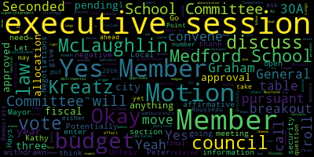
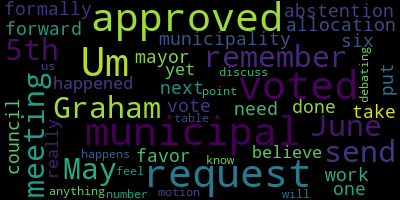

[Lungo-Koehn]: Motion to table number three fiscal year 24 budget allocation approval pending city council vote of budget. Motion by member Graham, seconded by member Rousseau.
[SPEAKER_04]: Can we get an explanation if you guys don't mind?
[Lungo-Koehn]: The council hasn't approved the budget yet.
[SPEAKER_04]: And so are we able to have conversation about anything right now or now?
[Lungo-Koehn]: Yes, about anything related to the fiscal year 24 budget allocation approval, which is pending City Council vote of the final budget. Okay. Potentially on the 20th. Potentially. Okay, then may I? Yes, Member McLaughlin.
[SPEAKER_04]: Thank you. So I had a question on in the special education section. Can I point of information? Isn't a motion to table undebatable? Oh, I'm sorry. You're right. It is undebatable.
[Lungo-Koehn]: Unless it's withdrawn. Let's take a vote. Unless it's withdrawn. Can I just ask a question also? Point of information, Democrats?
[SPEAKER_00]: Yes, I just wanted to know so because, you know, each year I kind of forget the process. So, we voted in the committee as a whole. So, tonight we were supposed to vote to approve it to then send the number to city council, and then Because when I talked to recover yellow. He said that the meeting they had yesterday. I watched some of it was a discussion in not a meeting to approve the budget because usually we vote to approve the budget, and then we send them our number. And then, you know, we, we wait to hear back for their approval so I guess I'm confused with the process now is the process different or did I just forget, because it's been another year.
[Graham]: May I remember Graham. Um, we voted our municipal request at our June 5th meeting. So we voted on to send a request to the municipality for $71,995,165. There were six in favor, one abstention. Um, so that work has been done. The next vote we would need to take is once the municipal allocation is formally approved by put forward by the mayor and approved by the council. And that has not happened yet. So I don't believe there's really anything for us to discuss until that happens because we don't know what that number will be.
[SPEAKER_00]: Okay, so then our next meeting will just be the final number and then we approve it overall. I would assume so yeah. Okay, so we don't have a date yet it's just something that we just have to wait. Yeah, we'll have to wait.
[SPEAKER_04]: Okay.
[Lungo-Koehn]: Go ahead and put information member McLaughlin.
[SPEAKER_04]: Thank you, because the some of the line items for some things that we may not have had access to before that we might have a question on, which I do, when are we addressing those.
[Graham]: I feel like we're debating a motion to table at this point.
[Lungo-Koehn]: Motion to table, I'll just, yeah, I'll call the roll. I think you would discuss anything either with the superintendent privately or at our next meeting after the council approves or denies the budget. Member Ruseau, if you could call the roll. Member Graham? Yes. Member Hays? Yes. Member Kreatz? Yes. Member McLaughlin? No. Member Mustone? No. Member Rossell, yes. Mayor Lungo-Koehn? No. Four in the affirmative, three in the negative. Motion to table passes. Negotiations and legal matters, executive session pursuant to general law 30A section A3, Medford School Committee will convene an executive session to discuss strategy in preparation for negotiations with Teamsters Local 25 security monitors and Local 25 administrators and custodians because an open meeting law will have a detrimental effect on the bargaining position of the committee. And so the chair declares, and also the executive session pursuant to General Law 30A, Section A2, the Medford School Committee will convene an executive session to discuss review open administrative contracts of Nicholas Tucci, Chad Fallon, Shannon Demos, Laurie Hodgson, Kathy Kay, Andrew O'Brien, Suzanne Galussi, Peter Cushing, Joan Bowen, Michelle Kingdon. Executive session pursuant to General Law 30A, A4, the Medford School Committee will convene an executive session to discuss the deployment of security personnel and devices and strategies with respect thereto. The Medford School Committee will not reconvene in public session subsequent to the executive session. Is there a motion to move into executive session? Motion to enter executive session. Seconded by? Seconded. Okay, Member Kreatz, roll call, please. Member Graham? Yes. Member Hays? Yes. Member Kreatz? Member Kreatz, did we just lose you? I think she's gone to the breakout room. Oh, okay.
[SPEAKER_00]: Somehow I got into another room. I don't know what happened, but now I'm back again.
[Lungo-Koehn]: Would you vote on the motion to enter executive session? Yes. Member McLaughlin? Yes. Member McDone? Yeah. Mayor Longo? Yes. Seven in the affirmative, zero in the negative. We'll move to executive session. Motion's approved.
[SPEAKER_00]: Yeah, I think I'm going to need to link again, because I got it too early.
[SPEAKER_04]: The link. You're not muted, just FYI. And you're in the breakout room.
[SPEAKER_00]: I'm in the breakout room.
[SPEAKER_04]: Oh, you're not in the breakout room. You're in the main room. And I got that. Yeah, I think my link disappeared too.
[SPEAKER_00]: All right, let me.
[SPEAKER_04]: Let me put it on to. Let me put a chat. Or let me just let Peter know.
[Lungo-Koehn]: Sure. He needs to give us the breakout again. Yeah. Hey, Peter, we need the breakout again. Yep. Let me help you out. Thanks. Um, okay. Just give me one second here.
[SPEAKER_04]: Oh, there's a, on the bottom it says breakout room. Kathy, you should be able to click on breakout room.
[Lungo-Koehn]: I was good. What I was going to do is I was going to try to move you and that trigger is another welcome. So Kathy can go. All right. Ladies and gentlemen, we are in executive session and thank you.
|
total time: 4.15 minutes total words: 482  |
total time: 0.83 minutes total words: 110  |
||
{kind=link}
{kind=link}